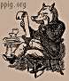

| Psychology of Programming Interest Group |
 | |||
| about newsletters workshops resources contents |
PPIG 2004 |
16th Annual Workshop 5-7 April 2004 Institute of Technology, Carlow, Ireland |
Programme |
Light Lunch and Registration
Tea and Discussions
Coffee
Lunch
Tea and discussions
Coffee
Lunch
[ top ]